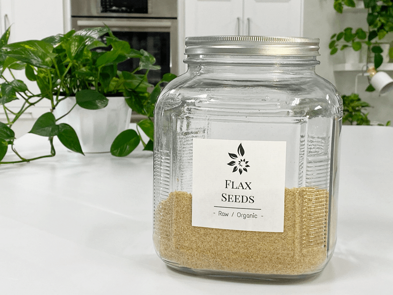
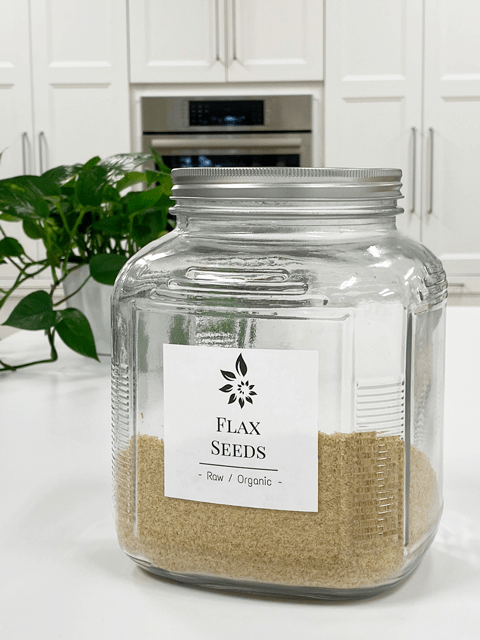

Flax Seed Flour – freshly ground as needed
Flax Seed Flour / Meal
Flax seeds… touted for their amazing nutrients, are also known as the “holy binder” of raw foods. So what makes them so magical when it comes to using them in recipes? For being such a tiny, itty bitty seed, it has an outer hull consisting of five layers. The outermost layer, called the epiderm, contains the mucilaginous material that is activated in the presence of liquid. Give it a stir and a little time to relax and bam (!) you have a slimy substance known as mucilage or gel.

Flax seeds contain both the soluble and insoluble types and can be very bulk-forming in the colon. This process can be a real blessing for those who suffer constipation, but it can also hinder movement when you don’t drink enough water with them.
To get the best bang for your buck in nutrition, grinding the seeds is the way to go. You can even blitz them in a spice grinder, cracking the seeds… making it possible to benefit from the core nutrition of the seed. There is some benefit to just soaking the seeds in water and obtaining the mucilage. That mucilage is known to help to prevent toxic build-up in the bowel during fasting or a healing diet. Only you can feel your body’s response to individual foods, so pay attention. :)
Taste-wise, flax seeds don’t have an overpowering taste, so it won’t alter the flavor of your foods unless you use too much. They can add a delightful nuttiness to just about any recipe. Some of you may be sensitive to the taste or don’t care about it. If this is you, chia seeds can often be used as a substitution or be cautious in the volume you use in a recipe. For a standard, family-sized recipe, you don’t want to add more than about 3 Tbsp of flax flour to it if you are sensitive to the taste.

Ingredients:
Yields 1 1/3 cup flax flour / meal
Preparation:
- Place the flax seeds in a dry blender grain container, Bullet, coffee or spice grinder.
- Grind until it resembles a flaky flour.
- Use it right away — store leftovers in the fridge for up to 2 weeks.
Whole flax:
- According to MayoClinic.com, whole flax seeds do not offer the same benefits as ground flax seeds. The whole seeds can pass through your digestive tract without breaking down, detracting from their health benefits. Ground flax seeds are sure to digest and supply your body with valuable fiber, omega-3 fatty acids, and protein.
- Many people used soaked flax seeds in recipes in their whole form… I, too, use to do this and do it from time to time but now find myself grinding it into flour so my body can better assimilate it.
- If you find a recipe using whole seeds and wish to convert it to ground flax, you might need to adjust the amount used. It will alter the texture, as well.
- When water is added to flax seeds, it will create a mucilage that suspends the seeds. You can not rinse this mucilage away, which is what creates a binder in recipes. When soaking, the volume will increase as much as 9so be aware that a little bit goes a long way.
Ground flax:
- The Omega-3 fatty acids (which help fight inflammation) present in flax-seed are located inside the seeds, and therefore, the seeds need to be opened to access the nutritional value. You can grind the flax-seed using a dry blender container used for grinding grains, coffee or spice grinder to ensure that you are reaping the benefits of flax-seed.
- I recommend grinding the seeds as needed because the oil in flax is highly unsaturated. Because of this, it means that it is very prone to oxidation (rancidity) unless it is stored correctly. This step is required to make the nutrients available (otherwise, they just “pass-through”). Should you grind up too much at one time, you must protect those oils by storing it in the fridge or freezer, in dark containers, preferably being consumed within a few weeks of grinding.
- Ground flaxseed is often sold or referred to as “milled flax,” “flaxseed flour,” or “flaxseed meal.”
- When ground flax is mixed with a liquid, it turns into a slurry, and when allowed to sit for a short time, it forms a gel.
© AmieSue.com